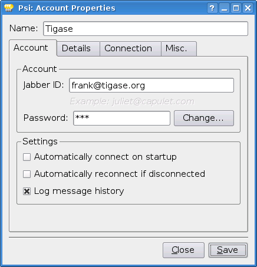
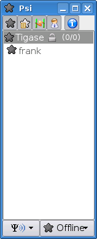

The first time you run Psi you see a screen like this:

To connect to tigase.org server we need to configure the program. Below are step-by-step instructions for novice users on how to setup Psi.
Psi can connect to many servers at the same time so we have to identify each connection. The first thing to do is assign a name to the connection we just created. As we are going to define connection to tigase.org server let’s just name it: Tigase.

Note! At the moment you can register an account through the Web site only. This is a single account for both services: The Drupal website and XMPP service on the tigase.org domain. If you want to have a Jabber account on the tigase.org server go to the registration page, un-tick "Register new account", and go to the point no 5. You can use guide points 2-4 to register a Jabber account on any other Jabber server.
When you press the Add button you will see next window where you can enter your Jabber account details:

Invent your user name for the account on Tigase server. Let’s assume your user name is: frank. Jabber ID’s however consist of 2 parts - your user name and server address. Exactly the same as an e-mail address. As you are registering an account on tigase.org server, you will have to enter in this field: frank@tigase.org. Next enter your password and click the Register button.

On successful registration you will receive a confirmation message and you should see a window like this:

It is possible that somebody may have already registered your chosen username. If so, you will receive error message and will then have to select another user name and try to register again.
After clicking the OK button you will see a window with your connection and account setup. You can stick with default values for now.

Just click the Save button and this window closes.
Now you have your account configured and ready to use but you are still off-line. You can find out whether you are on-line or off-line by looking at the bottom of main Psi window. There you can see Offline text.

Click on this Offline text and you will see a list of possible options. Just select Online.

Now you are connected!
The box also allows you to choose other online statuses which can tell other users if you are away or busy.
Well, you are now connected but how to talk to other people? How to add friends to the contact list?
You can send a message to your friends stright away using the Psi menu option New blank message. It is much more convenient however, if you could see which of your friends is online and available for chatting and if you could start talking to your friend just by clicking on his name.